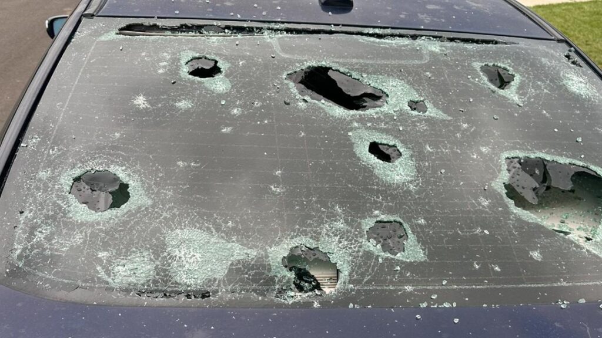
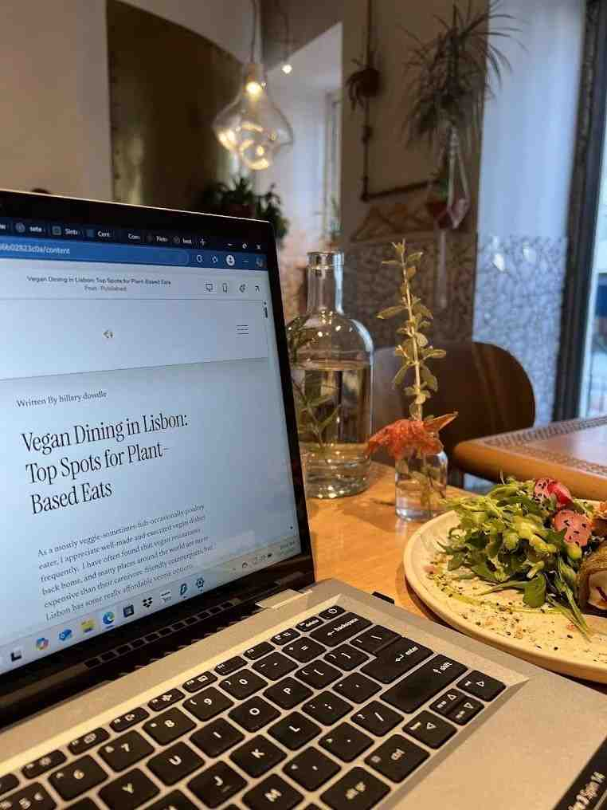

All Budget Guides
25 real-world stories and tutorials, sorted by date.

Airline Baggage Fees Hidden Costs 2026
I booked a flight to Miami last month. $189. Round trip. I thought I had found the deal of the century. By the time I checked in, I had paid $340. The...
The 3000 European Trip I Planned For 900 And What Went Wrong
The £3,000 European Trip I Planned for £900 and What Went Wrong I sat in my flat in Brighton at 2 AM, staring at a spreadsheet that said £903.47, and ...
Arizona Heat Travel Budget Meltdown
Why My Arizona Road Trip Budget Went Up in Smoke—Literally Sarah Mitchell I was planning a road trip from Tucson to Flagstaff for my anniversary. I ha...
Europe Trip Budget 3000 Spent 5800
The spreadsheet was beautiful. I had color-coded categories, currency conversion formulas, and a contingency line item of 15% — which I thought was ge...
I Budgeted 3500 For A Week In Brighton I Spent 5800 Heres
I Budgeted $3,500 for a Week in Brighton. I Spent $5,800. Here's Where the Money Went. It was supposed to be the perfect trip. My wife and I had been ...
How a Solo Backpacker Spent 45 Days in Southeast Asia on $1,200 | Travel Budget Pro
The email landed in my inbox on a grey Tuesday morning in Brighton. Subject line in all caps: “I DID IT – 45 DAYS FOR $1,200.” The sender was a guy na...
The Family Who Blew Their $8K Vacation Budget in 4 Days (And How They Fixed It“I don’t understand. We saved for two years.” | Travel Budget Pro
That’s what Karen said when she called me from a hotel lobby in Orlando. Her voice was tight, the kind of tight that comes right before tears. She and...
A Digital Nomad's Shock: Living in Lisbon Cost 40% Less Than London | Travel Budget Pro
The WhatsApp message came through at 11 PM. A friend named Sophie, who’d been a corporate lawyer in London for eight years, had just moved to Lisbon. ...
When Currency Fluctuations Wiped Out Her Japan Shopping Budget Overnight | Travel Budget Pro
The yen dropped 12% against the pound in six weeks. A woman named Claire lost £450 of spending money without buying a single thing.
The Couple Who Tracked Every Penny on a 3-Month Road Trip Across the US | Travel Budget Pro
A spreadsheet with 1,247 rows. Every coffee. Every toll. Every campsite. That’s what a couple named Matt and Rachel sent me after their 90‑day road tr...
How to Build a Travel Budget from Scratch in 20 Minutes | Travel Budget Pro
You’ve booked the flights. You’ve told your boss you’re taking two weeks off. Now you’re staring at a blank notebook trying to figure out how much mon...
Step-by-Step: Planning a Multi-City European Trip Budget with Real Prices | Travel Budget Pro
The email arrived with twelve attachments. A woman named Hannah was planning a six‑city European trip for her and her husband. They had three weeks. T...
How to Use the Japan Travel Cost Calculator for Your Exact Itinerary | Travel Budget Pro
“How much should I budget for a week in Tokyo?” That’s the question I get more than any other about Japan. The answer is always the same: it depends o...
The Complete Guide to Budgeting for Hidden Travel Costs (Tips, Fees, Emergencies) | Travel Budget Pro
Laura’s trip to Iceland was going perfectly until she returned her rental car. The agent pointed to a tiny scratch on the bumper – something Laura had...
How to Track Expenses in Multiple Currencies Without Losing Your Mind | Travel Budget Pro
I once spent 20 minutes staring at a spreadsheet trying to figure out whether I’d actually spent £47 or the equivalent of £52 on a dinner in Budapest....
The Real Cost of Travel by Region: A Data-Driven Breakdown for 2026 | Travel Budget Pro
Southeast Asia costs $35 a day. Western Europe costs $120. Scandinavia costs $180. Those are averages. But averages hide the truth. A backpacker in Ba...

Digital Nomad Economics: Cost of Living, Co-Working, and Tax Implications by City | Travel Budget Pro
Sophie’s monthly spending in Lisbon was €1,400. Her monthly income from UK clients was €4,000. She was saving €2,600 a month – more than she’d saved i...
Backpacking Europe in 2026: Budget Ranges, Rail Pass Math, and City-by-City Costs | Travel Budget Pro
The email was short. “Oliver, I have 30 days and €3,000. Can I backpack Europe?” It came from a reader named Hannah, 23, first big trip. She wanted to...

Family Vacation Budgeting: All-Inclusive vs. DIY, and the Hidden Math of Kids' Costs | Travel Budget Pro
The spreadsheet had 47 rows. A family of four – two adults, two kids aged 7 and 10 – had just returned from a week in Cancun. The total was $6,800. Th...
Travel Insurance, Medical Costs, and Emergency Funds: The Budget Layer Most People Skip | Travel Budget Pro
The hospital in Bangkok wanted $5,000 upfront before they would treat a man named Rob for appendicitis. He didn’t have travel insurance. He didn’t hav...
Airbnb vs. Hotel vs. Hostel: A Complete Cost Analysis for Every Travel Style | Travel Budget Pro
The Airbnb cleaning fee was $150. For a two-night stay. The hotel down the street was $120 per night, all taxes included. The hostel was $40 per night...
2026 Summer Travel Price Surge: Where Costs Are Up and How to Beat Them | Travel Budget Pro
The email from a reader named Liam arrived in late February. Subject line: “Are these prices real?” He’d just priced a summer trip to Greece. Flights ...
Japan's Travel Boom: What the Visa Relaxation Means for Your Budget | Travel Budget Pro
The news broke in late 2025. Japan was relaxing visa requirements for tourists from dozens of countries, including the UK, US, Canada, Australia, and ...

Sustainable Tourism Taxes: The New Hidden Cost in Popular Destinations | Travel Budget Pro
The hotel receptionist in Venice handed Anna a bill for an extra €24. “Tourist tax,” she said. Anna had already paid for her room online. She didn’t k...
How to Use the Travel Budget Calculator to Plan a 2-Week Trip with Precision | Travel Budget Pro
A reader named Jess emailed me last month. She was planning a 15-day trip to Italy. She’d never been to Europe. She’d never built a travel budget befo...
Walking Through the Multi-City Trip Cost Tool: Europe, Asia, and Beyond | Travel Budget Pro
The email came from a woman named Priya. She was planning a six-week trip to Southeast Asia: Thailand, Vietnam, Cambodia, Laos, Malaysia, Singapore. S...
Using the Digital Nomad Budget Planner to Compare 5 Cities Side by Side | Travel Budget Pro
The email arrived at 7 AM on a Monday. The subject line: “Help me decide.” A reader named Chloe was in the middle of a quiet crisis. She was a freelan...
All-Inclusive Resort vs. Independent Travel: A Real Cost Comparison for Families | Travel Budget Pro
The decision seemed easy. A family of four – two adults, two kids aged 7 and 9 – had two options for a week in Mexico. Option A: an all-inclusive reso...
Backpacking vs. Mid-Range vs. Luxury: The Same Trip at Three Budget Levels | Travel Budget Pro
Three travellers. Same destination. Same duration. Same activities. Wildly different budgets.
Peak Season vs. Shoulder Season: How Timing Changes Your Travel Budget by 50% | Travel Budget Pro
The flight from London to Rome was £320 in June. In November, the same flight was £120. That's a 63% difference. The hotel that cost €250 a night in J...